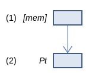
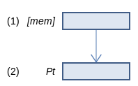
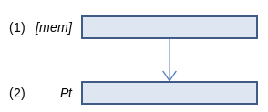

SVE Instruction List by Dougall Johnson
LDR (predicate): Load predicate register
LDR Pt, [Xn{, #imm, MUL VL}] (SVE (SME
128-bit SVE
Load a predicate register from memory. On 128-bit SVE, this loads 2 bytes from memory (1), into a 16-bit predicate register (2), with the address is calculated as Xn + imm * 2.
256-bit SVE
Load a predicate register from memory. On 256-bit SVE, this loads 4 bytes from memory (1), into a 32-bit predicate register (2), with the address is calculated as Xn + imm * 4.
512-bit SVE
Load a predicate register from memory. On 512-bit SVE, this loads 8 bytes from memory (1), into a 64-bit predicate register (2), with the address is calculated as Xn + imm * 8.
Larger sizes
1024-bit SVE
Load a predicate register from memory. On 1024-bit SVE, this loads 16 bytes from memory (1), into a 128-bit predicate register (2), with the address is calculated as Xn + imm * 16.
2048-bit SVE
Load a predicate register from memory. On 2048-bit SVE, this loads 32 bytes from memory (1), into a 256-bit predicate register (2), with the address is calculated as Xn + imm * 32.
Report mistakes or give feedback
Inspired by and based on the x86/x64 SIMD Instruction List by Daytime.